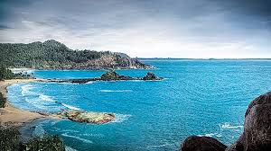
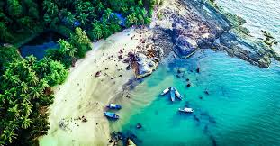
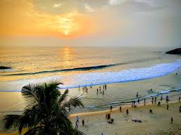

Abhi TravelsAbhi Travels
Abhi TravelsAbhi Travels |
GOA
Goa, located on the southwestern coast of India, is a renowned tourist destination known for its stunning beaches, vibrant nightlife, and rich cultural heritage. The state's coastline stretches over 100 kilometers, offering picturesque beaches such as Baga, Anjuna, and Palolem, each with its unique charm. Beyond the sun and sand, Goa boasts a fascinating history with its Portuguese colonial architecture, seen in landmarks like the Basilica of Bom Jesus and Se Cathedral. The local cuisine is a delightful fusion of Indian and Portuguese flavors, with seafood being a staple. Goa's lush greenery and scenic landscapes make it a haven for nature lovers and adventure enthusiasts alike. |
|  | Gokarna
Gokarna, a small coastal town in Karnataka, India, is renowned for its pristine beaches and serene atmosphere. It is a popular pilgrimage site with ancient temples, such as the Mahabaleshwar Temple, attracting devotees. The town's beaches, including Om Beach and Kudle Beach, offer a tranquil alternative to the more commercialized coastal destinations. Gokarna is also a haven for yoga enthusiasts and backpackers seeking a peaceful retreat. The town's natural beauty and laid-back vibe make it a perfect escape from the hustle and bustle. |
|  |
Dandeli
Dandeli, located in the Western Ghats of Karnataka, India, is a paradise for nature lovers and adventure enthusiasts. The town is known for its dense forests, diverse wildlife, and the scenic Kali River, making it a popular spot for activities like white-water rafting, trekking, and bird watching. Dandeli Wildlife Sanctuary is home to a variety of flora and fauna, including leopards, elephants, and numerous bird species. The area's natural beauty is complemented by landmarks such as Syntheri Rocks, a giant limestone rock formation. Dandeli offers a perfect blend of thrilling adventures and serene natural landscapes. |

| Mumbai
Mumbai, the bustling financial capital of India, is home to several iconic beaches that offer a respite from the city's fast pace. Juhu Beach is one of the most popular, known for its lively atmosphere, street food stalls, and beautiful sunsets. Marine Drive, also known as the Queen's Necklace, features a scenic promenade along the Arabian Sea, ideal for evening strolls. Versova Beach, known for its clean-up drives, is a testament to the community's efforts to maintain its beauty. These beaches provide a perfect blend of relaxation, local culture, and vibrant city life, making them must-visit spots in Mumbai. |
|  | Chennai
Chennai, the capital of Tamil Nadu, India, is home to the famous Marina Beach, one of the longest urban beaches in the world. Stretching over 13 kilometers, Marina Beach is a popular spot for locals and tourists alike, known for its scenic sunrise views and bustling promenade. The beach is lined with historical landmarks, statues, and memorials, adding a cultural touch to its natural beauty. Activities such as beach volleyball, kite flying, and horse riding can be enjoyed along the sandy shores. Marina Beach also hosts numerous food stalls offering a taste of local Chennai cuisine, making it a vibrant and must-visit destination. |